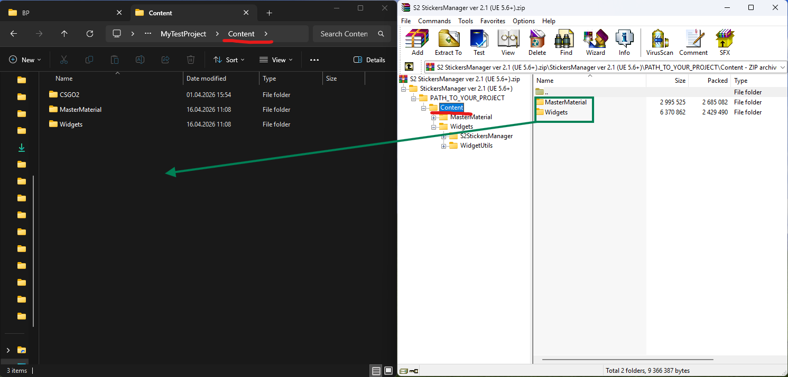
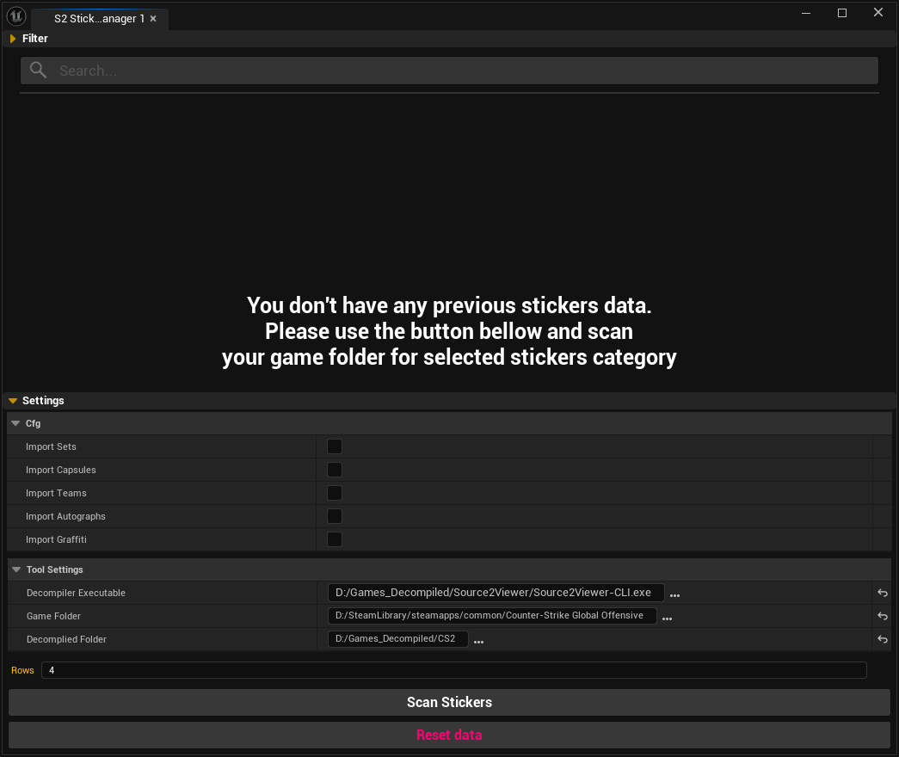
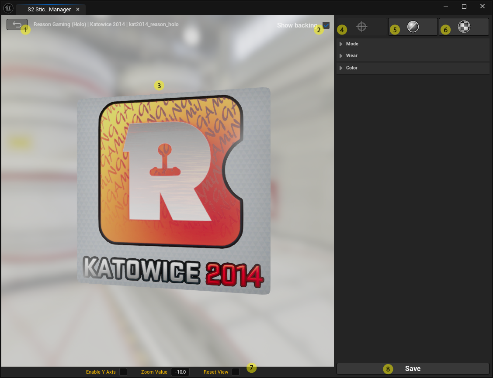
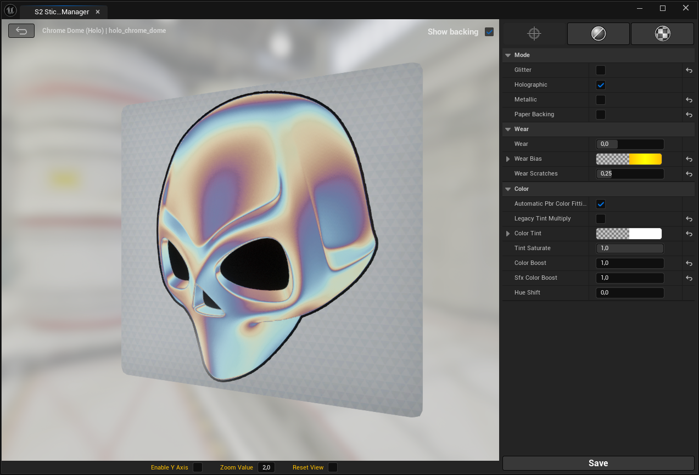
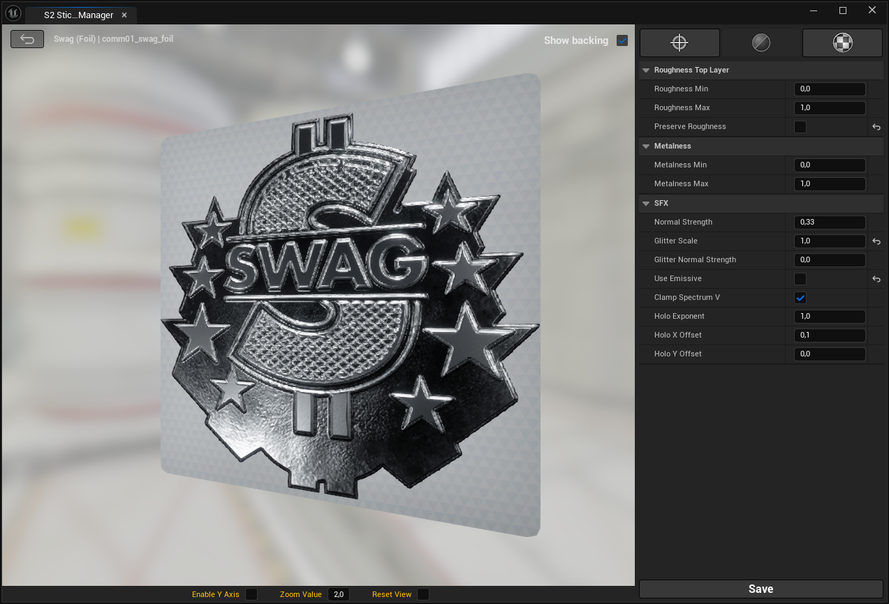
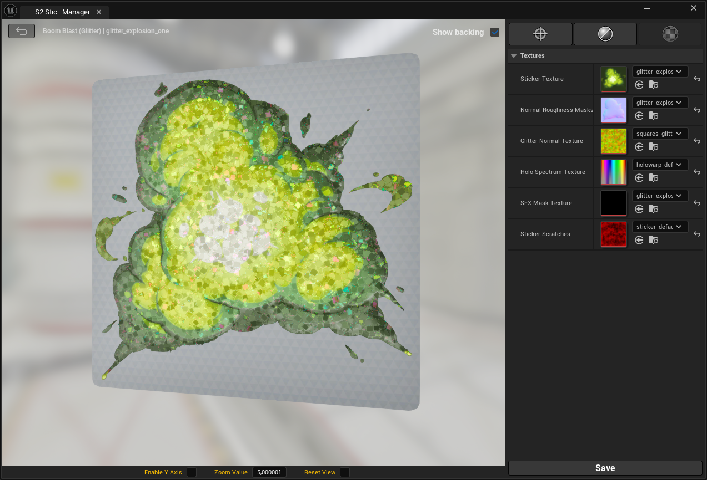

- Просмотр и управление большой библиотекой стикеров и граффити
- Виджет имеет встроенную систему фильтрации, которая позволяет быстро находить визуально подходящие элементы и значительно сокращает время навигации по коллекции. Стикеры можно отфильтровать по доминирующему цвету.
- Полноценная настройка материалов в реальном времени
- Поддержка стилей: Paper, Glitter, Metallic, Holographic, Lenticular и Graffiti
- Самообновляемая система добавления новых стикеров и граффити
- Unreal Engine 5.6 или новее
- PyToolkit plugin (версии 1.8 и выше)
Установленная Counter-Strike 2
Утилита Source2Viewer CLI для декомпиляции моделей и текстур
Свободное место на диске (первый запуск может импортировать несколько тысяч текстур)

(C:\Program Files\Epic Games\UE_5.6\Engine\Plugins).
Запустите Unreal Engine и включите следующие плагины (в меню Edit > Plugins):
- Editor Scripting Utilities
- Python Editor Script Plugin
- Python Foundation Packages
- Http Blueprint
- PyToolkit

- Скачайте архив с виджетом
- Распакуйте содержимое архива. Откройте в скачанном архипапку Content и скопируйте все её файлы в папку Content вашего проекта.
- В Content Browser найдите папку Widgets. Кликните по виджету S2_StickersManager правой кнопкой мыши и выберите Run Editor Utility Widget.

-
Decompiler Executable
Путь к декомпилеру Source2Viewer CLI (обычно называется cli-windows-x64.zip). -
Game Folder
Путь к установленной CS2 (например: D:/SteamLibrary/steamapps/common/Counter-Strike Global Offensive). -
Decompiled Folder
Любая папка, куда будут складываться декомпилированные файлы из игры (главное, чтобы на диске хватало места).
Если возникают ошибки — убедитесь, что:
- Виджет установлен по правильному пути в проекте;
- Включены все необходимые плагины;
- Используется Unreal Engine версии 5.6 или выше (в имени архива с виджетом указана минимально нужная версия движка);
- Декомпилер обновлён до последней версии.
Если декомпилер не работает, можно попробовать использовать DEV версию.

- Кнопка возврата (Back) — возвращает пользователя к предыдущему экрану (списку стикеров или категории).
- Флаг “Show backing” — Переключатель отображения задней подложки стикера.
Позволяет включить или скрыть фон, чтобы оценить форму, прозрачность и края стикера. - Окно предпросмотра — реалтайм-отображение материала и всех изменений. Поддержка вращения, зума и смены угла обзора
- Основные настройки материала
- Параметры отображения материала — настройка Roughness / Metalness / Визуальных эффектов
- Текстуры.
- Панель управления камерой.
- Save — сохранение финального Material Instance для дальнейшего использования.

Mode
Определяет активные визуальные режимы материала стикера:
-
Glitter — добавляет эффект блёсток и микроскопических отражений.
-
Holographic — включает голографический эффект с переливом цвета в зависимости от угла обзора.
-
Metallic — включает металлический тип отображения.
-
Paper Backing — включает бумажную подложку, имитирующую классический стикер.
Wear
Параметры износа стикера:
-
Wear — общий уровень износа. Чем выше значение, тем сильнее эффект старения.
-
Wear Bias — смещает распределение износа по поверхности.
-
Wear Scratches — управляет интенсивностью царапин и микроповреждений.
Color
Настройки цветовой обработки:
-
Automatic PBR Color Fitting — автоматически приводит цвета к корректному PBR-диапазону.
-
Legacy Tint Multiply — включает старый режим умножения цвета (для совместимости).
-
Color Tint — основной цвет стикера.
-
Tint Saturate — насыщенность цветового оттенка.
-
Color Boost — усиливает общий цветовой контраст.
-
SFX Color Boost — усиливает цвет эффектов (голография, блёстки).
-
Hue Shift — смещает оттенок по цветовому кругу.

Roughness
Настройки шероховатости верхнего слоя:
-
Roughness Min — минимальная шероховатость поверхности (более гладкий и отражающий вид).
-
Roughness Max — максимальная шероховатость поверхности (более матовый вид).
-
Preserve Roughness — сохраняет исходное значение шероховатости из текстуры.
Metalness
Настройки характера отражений материала:
-
Metalness Min — минимальный уровень металлического поведения поверхности.
-
Metalness Max — максимальный уровень металлического поведения поверхности.
SFX
Параметры визуальных эффектов:
-
Normal Strength — сила нормалей.
-
Glitter Scale — масштаб эффекта блёсток (меньше значение — крупнее элементы, больше — мельче).
-
Glitter Normal Strength — сила нормалей у эффекта блёсток.
-
Use Emissive — включает подсветку элементов стикера.
-
Clamp Spectrum V — ограничивает диапазон цветового спектра для голографического эффекта.
-
Holo Exponent — управляет резкостью и контрастом голографического эффекта.
-
Holo X/Y Offset — смещение голографического эффекта.

Textures
Sticker Texture — основная цветная текстура стикера. Определяет форму, цвет и базовый рисунок.
Normal Roughness Masks — комбинированная текстура, содержащая данные для нормалей и шероховатости поверхности.
Glitter Normal Texture — текстура нормалей для эффекта блёсток. Определяет, как отдельные блёстки отражают свет.
Holo Spectrum Texture — текстура для голографического эффекта.
SFX Mask Texture — маска голографического эффекта.
Sticker Scratches — текстура царапин и повреждений. Используется для добавления реалистичного износа и неровностей поверхности.